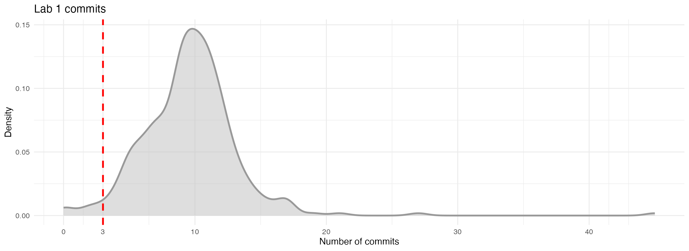
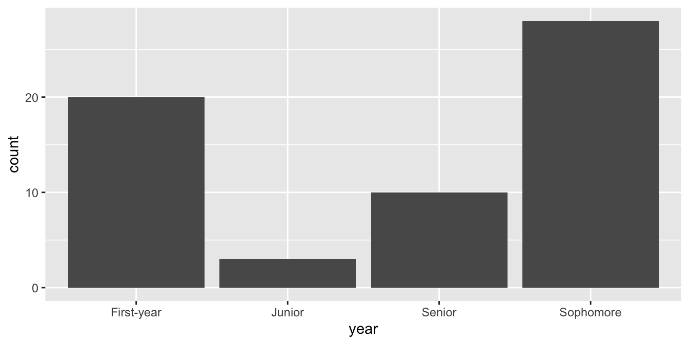

Data types and classes
Lecture 8
Warm-up
While you wait…
Prepare for today’s application exercise: ae-08-durham-climate-factors
Go to your
aeproject in RStudio.Make sure all of your changes up to this point are committed and pushed, i.e., there’s nothing left in your Git pane.
Click Pull to get today’s application exercise file: ae-08-durham-climate-factors.qmd.
Wait till the you’re prompted to work on the application exercise during class before editing the file.
Lab 1 feedback
- Describing a distribution:
- shape (modality and skewness)
- center (with calculated value or estimated value or range)
- spread (with calculated value or estimated value or range)
- unusual observations (and, where possible, explanation for why they’re unusual)
- Describing a relationship:
- direction (positive or negative)
- form (linear or non-linear)
- strength
- unusual observations (and, where possible, explanation for why they’re unusual)
Lab 1 commits

Regrade request policy
https://sta199-f24.github.io/course-syllabus.html#regrade-requests
Considered for errors in grade calculation or if a correct answer was mistakenly marked as incorrect
-
Not a mechanism for:
- disputing the number of points deducted for an incorrect response
- asking for clarification on feedback (come to office hours instead)
Due on Gradescope within a week after an assignment is returned
The entire assignment may be regraded, which could result in an adjustment in either direction
No regrade requests after the final exam has been administered
Data types
How many classes do you have on Tuesdays?
survey# A tibble: 61 × 3
Timestamp How many classes do you have o…¹ `What year are you?`
<chr> <chr> <chr>
1 9/23/24 19:57 2 Sophomore
2 9/23/24 19:58 3 First-year
3 9/23/24 20:06 2 Sophomore
4 9/23/24 20:09 2 Sophomore
5 9/23/24 21:48 0 Senior
6 9/24/24 9:44 2 First-year
7 9/24/24 10:15 2 Senior
8 9/24/24 10:50 2 Sophomore
9 9/24/24 10:54 3 First-year
10 9/24/24 11:08 2 Senior
# ℹ 51 more rows
# ℹ abbreviated name: ¹`How many classes do you have on Tuesdays?`
rename() variables
To make them easier to work with…
survey <- survey |>
rename(
tue_classes = `How many classes do you have on Tuesdays?`,
year = `What year are you?`
)Variable types
What type of variable is tue_classes?
survey# A tibble: 61 × 3
Timestamp tue_classes year
<chr> <chr> <chr>
1 9/23/24 19:57 2 Sophomore
2 9/23/24 19:58 3 First-year
3 9/23/24 20:06 2 Sophomore
4 9/23/24 20:09 2 Sophomore
5 9/23/24 21:48 0 Senior
6 9/24/24 9:44 2 First-year
7 9/24/24 10:15 2 Senior
8 9/24/24 10:50 2 Sophomore
9 9/24/24 10:54 3 First-year
10 9/24/24 11:08 2 Senior
# ℹ 51 more rowsLet’s (attempt to) clean it up…
Data types
Data types in R
- logical
- double
- integer
- character
- and some more, but we won’t be focusing on those
Logical & character
Double & integer
Concatenation
Vectors can be constructed using the c() function.
- Numeric vector:
c(1, 2, 3)[1] 1 2 3. . .
- Character vector:
c("Hello", "World!")[1] "Hello" "World!". . .
- Vector made of vectors:
Converting between types
with intention…
Converting between types
with intention…
Converting between types
without intention…
c(2, "Just this one!")[1] "2" "Just this one!". . .
R will happily convert between various types without complaint when different types of data are concatenated in a vector, and that’s not always a great thing!
Converting between types
without intention…
c(FALSE, 3L)[1] 0 3. . .
c(1.2, 3L)[1] 1.2 3.0. . .
c(2L, "two")[1] "2" "two"Explicit vs. implicit coercion
Explicit coercion:
When you call a function like as.logical(), as.numeric(), as.integer(), as.double(), or as.character().
Implicit coercion:
Happens when you use a vector in a specific context that expects a certain type of vector.
Data classes
Data classes
- Vectors are like Lego building blocks
- We stick them together to build more complicated constructs, e.g. representations of data
- The class attribute relates to the S3 class of an object which determines its behaviour
- You don’t need to worry about what S3 classes really mean, but you can read more about it here if you’re curious
- Examples: factors, dates, and data frames
Factors
R uses factors to handle categorical variables, variables that have a fixed and known set of possible values
More on factors
We can think of factors like character (level labels) and an integer (level numbers) glued together
glimpse(class_years) Factor w/ 4 levels "First-year","Junior",..: 1 4 4 3 2as.integer(class_years)[1] 1 4 4 3 2Dates
today <- as.Date("2024-09-24")
today[1] "2024-09-24"typeof(today)[1] "double"class(today)[1] "Date"More on dates
We can think of dates like an integer (the number of days since the origin, 1 Jan 1970) and an integer (the origin) glued together
as.integer(today)[1] 19990as.integer(today) / 365 # roughly 55 yrs[1] 54.76712Data frames
We can think of data frames like like vectors of equal length glued together
df <- data.frame(x = 1:2, y = 3:4)
df x y
1 1 3
2 2 4Lists
Lists are a generic vector container; vectors of any type can go in them
Lists and data frames
- A data frame is a special list containing vectors of equal length
df x y
1 1 3
2 2 4- When we use the
pull()function, we extract a vector from the data frame
df |>
pull(y)[1] 3 4Working with factors
Read data in as character strings
survey# A tibble: 61 × 3
Timestamp tue_classes year
<chr> <chr> <chr>
1 9/23/24 19:57 2 Sophomore
2 9/23/24 19:58 3 First-year
3 9/23/24 20:06 2 Sophomore
4 9/23/24 20:09 2 Sophomore
5 9/23/24 21:48 0 Senior
6 9/24/24 9:44 2 First-year
7 9/24/24 10:15 2 Senior
8 9/24/24 10:50 2 Sophomore
9 9/24/24 10:54 3 First-year
10 9/24/24 11:08 2 Senior
# ℹ 51 more rowsBut coerce when plotting
ggplot(survey, mapping = aes(x = year)) +
geom_bar()
Use forcats to reorder levels
A peek into forcats
Reordering levels by:
fct_relevel(): handfct_infreq(): frequencyfct_reorder(): sorting along another variablefct_rev(): reversing
…
. . .
Changing level values by:
fct_lump(): lumping uncommon levels together into “other”fct_other(): manually replacing some levels with “other”
…